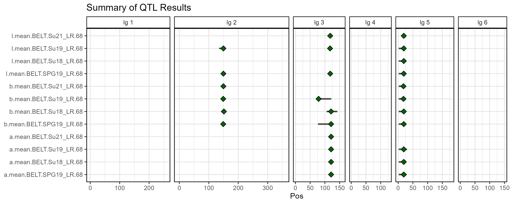
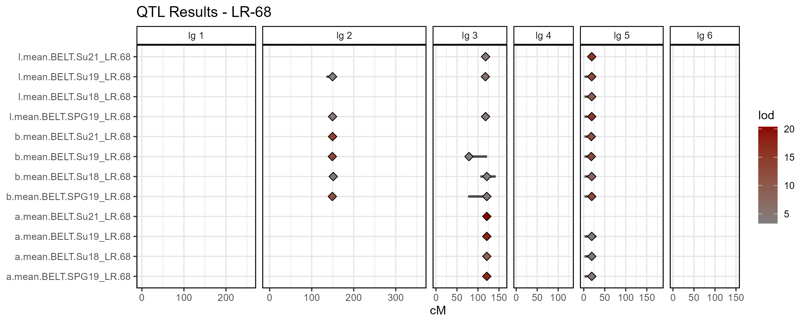
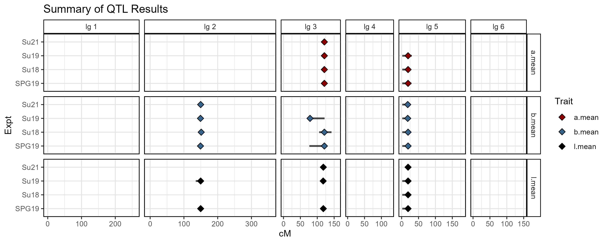
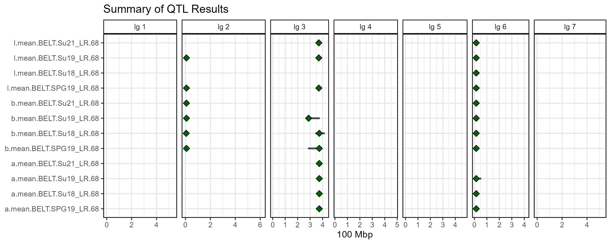
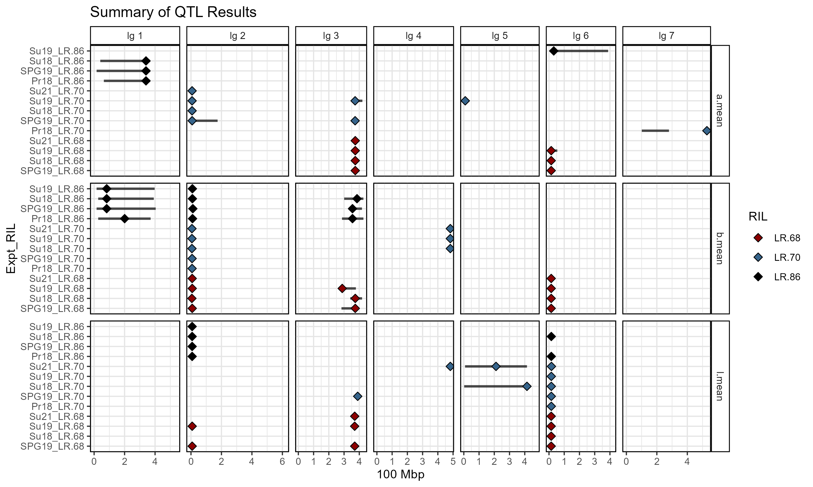

gg_QTL_Summary()
5.1_gg_QTL_Summary.RmdThe function gg_QTL_Summary() creates plot summarising
the results from multiple QTL analyses.
Sample Data
- LR-68_gmap.csv
- myQTL_LR-68_lab_peaks.csv
- LR-70_gmap.csv
- myQTL_LR-70_lab_peaks.csv
- LR-86_gmap.csv
- myQTL_LR-86_lab_peaks.csv
Inputting a properly formatted myG and myQ
object is all that is needed to create QTL summary plots.
# Prep data
myG <- read.csv("LR-68_gmap.csv") %>%
select(Marker=SNP, Chr=lg, Pos=Position)
head(myG)## Marker Chr Pos
## 1 Lcu.2RBY.Chr1_102694 1 0.0000
## 2 Lcu.2RBY.Chr1_437483 1 2.4773
## 3 Lcu.2RBY.Chr1_890646 1 6.0548
## 4 Lcu.2RBY.Chr1_1003850 1 7.3156
## 5 Lcu.2RBY.Chr1_1232402 1 8.6145
## 6 Lcu.2RBY.Chr1_1363775 1 9.8648
myQ <- read.csv("myQTL_LR-68_lab_peaks.csv") %>%
select(Trait=lodcolumn, Chr=chr, Pos=pos, lod, Pos_lo=ci_lo, Pos_hi=ci_hi)
head(myQ)## Trait Chr Pos lod Pos_lo Pos_hi
## 1 l.mean.BELT.SPG19_LR.68 2 149.5610 4.512527 144.0883 155.6161
## 2 l.mean.BELT.SPG19_LR.68 3 118.0000 4.357701 114.8143 124.0238
## 3 l.mean.BELT.SPG19_LR.68 5 19.0000 15.104322 1.9097 21.3122
## 4 a.mean.BELT.SPG19_LR.68 3 121.0030 17.255255 117.5240 121.6203
## 5 a.mean.BELT.SPG19_LR.68 5 19.0000 5.080618 1.9097 28.9065
## 6 b.mean.BELT.SPG19_LR.68 2 149.0507 11.558914 148.5405 149.9675
# Plot
mp <- gg_QTL_Summary(
# Genetic map
myQ = myQ,
# QTL results
myG = myG )
# Save
ggsave("figures/gg_QTL_Summary_01.png", mp, width = 10, height = 4)
Customized Plot
# Plot
mp <- gg_QTL_Summary(
# Genetic map
myG = myG,
# QTL results
myQ = myQ,
# Custom title
title = "QTL Results - LR-68",
# Fill points based on lod values
lodFill = T,
fillColor = "darkred",
fillColor_low = "grey50",
# Custom labels
xLab = "cM",
facetLab = "lg" )
# Save
ggsave("figures/gg_QTL_Summary_02.png", mp, width = 10, height = 4)
Grouping
# Prep data
myG <- read.csv("LR-68_gmap.csv") %>%
select(Marker=SNP, Chr=lg, Pos=Position)
head(myG)## Marker Chr Pos
## 1 Lcu.2RBY.Chr1_102694 1 0.0000
## 2 Lcu.2RBY.Chr1_437483 1 2.4773
## 3 Lcu.2RBY.Chr1_890646 1 6.0548
## 4 Lcu.2RBY.Chr1_1003850 1 7.3156
## 5 Lcu.2RBY.Chr1_1232402 1 8.6145
## 6 Lcu.2RBY.Chr1_1363775 1 9.8648
myQ <- read.csv("myQTL_LR-68_lab_peaks.csv") %>%
select(Trait=lodcolumn, Chr=chr, Pos=pos, lod, Pos_lo=ci_lo, Pos_hi=ci_hi) %>%
mutate(y_Group = substr(Trait, regexpr(".BELT", Trait)+6, regexpr("_", Trait)-1 ),
facet_Group = substr(Trait, 1, regexpr(".BELT", Trait)-1),
color_Group = facet_Group )
head(myQ)## Trait Chr Pos lod Pos_lo Pos_hi y_Group
## 1 l.mean.BELT.SPG19_LR.68 2 149.5610 4.512527 144.0883 155.6161 SPG19
## 2 l.mean.BELT.SPG19_LR.68 3 118.0000 4.357701 114.8143 124.0238 SPG19
## 3 l.mean.BELT.SPG19_LR.68 5 19.0000 15.104322 1.9097 21.3122 SPG19
## 4 a.mean.BELT.SPG19_LR.68 3 121.0030 17.255255 117.5240 121.6203 SPG19
## 5 a.mean.BELT.SPG19_LR.68 5 19.0000 5.080618 1.9097 28.9065 SPG19
## 6 b.mean.BELT.SPG19_LR.68 2 149.0507 11.558914 148.5405 149.9675 SPG19
## facet_Group color_Group
## 1 l.mean l.mean
## 2 l.mean l.mean
## 3 l.mean l.mean
## 4 a.mean a.mean
## 5 a.mean a.mean
## 6 b.mean b.mean
# Plot
mp <- gg_QTL_Summary_Groups(
# Genetic map
myG = myG,
# QTL results
myQ = myQ,
# Custom title
title = "Summary of QTL Results",
#Name of y column
yGroup = "y_Group",
# Name of faceting column
facetGroup = "facet_Group",
# Name of coloring column
colorGroup = "color_Group",
# Title for the color legend
colorName = "Trait",
# Color pallete
fillColors = c("darkred","steelblue4","black", "green"),
# Custom labels
yLab = "Expt",
xLab = "cM",
facetLab = "lg" )
# Save
ggsave("figures/gg_QTL_Summary_03.png", mp, width = 10, height = 4)
Physical Positions
QTL analyses are generally done with linkage groups and their genetic positions. However, we may want to convert these into physical positions so we can compare with other analyses.
# Prep data
myG <- read.csv("LR-68_gmap.csv") %>%
select(Marker=SNP, lg, cM=Position)
myQ <- read.csv("myQTL_LR-68_lab_peaks.csv") %>%
rename(Trait=lodcolumn, lg=chr, cM=pos) %>%
select(Trait, lg, cM, lod, ci_lo, ci_hi) %>%
left_join(myG, by = c("lg", "cM")) %>%
left_join(myG%>%rename(M_lo=Marker), by = c("lg", "ci_lo"="cM")) %>%
left_join(myG%>%rename(M_hi=Marker), by = c("lg", "ci_hi"="cM")) %>%
arrange(cM) %>%
arrange(lg) %>%
mutate(Chr = NA, Pos = NA, Pos_lo = NA, Pos_hi = NA)
#
for(i in 1:nrow(myQ)) {
lg_i <- myQ$lg[i]
myGi <- myG %>% filter(lg == lg_i)
# find marker positions
if(!is.na(myQ$Marker[i])) {
myQ$Chr[i] <- as.numeric(substr(myQ$Marker[i], regexpr("Chr", myQ$Marker[i])+3, regexpr("_", myQ$Marker[i])-1))
myQ$Pos[i] <- as.numeric(substr(myQ$Marker[i], regexpr("_", myQ$Marker[i])+1, nchar(myQ$Marker[i])))
}
# find missing marker positions
if(is.na(myQ$Marker[i])) {
cM_i <- myQ$cM[i]
myDi <- myGi$cM - cM_i
pos1 <- myGi$Marker[which.min(ifelse(myDi<0,Inf,myDi))]
pos2 <- myGi$Marker[which.max(ifelse(myDi>0,-Inf,myDi))]
chr_i <- as.numeric(substr(pos1, regexpr("Chr", pos1)+3, regexpr("_", pos1)-1))
pos1 <- as.numeric(substr(pos1, regexpr("_", pos1)+1, nchar(pos1)))
pos2 <- as.numeric(substr(pos2, regexpr("_", pos2)+1, nchar(pos2)))
myQ$Chr[i] <- chr_i
myQ$Pos[i] <- (pos1 + pos2) / 2
}
# find ci_lo pos
if(!is.na(myQ$M_lo[i])) {
myQ$Pos_lo[i] <- as.numeric(substr(myQ$M_lo[i], regexpr("_", myQ$M_lo[i])+1, nchar(myQ$M_lo[i])))
}
if(!is.na(myQ$M_hi[i])) {
myQ$Pos_hi[i] <- as.numeric(substr(myQ$M_hi[i], regexpr("_", myQ$M_hi[i])+1, nchar(myQ$M_hi[i])))
}
}
#
myG <- myG %>%
mutate(Chr = as.numeric(substr(Marker, regexpr("Chr", Marker)+3, regexpr("_", Marker)-1 )),
Pos = as.numeric(substr(Marker, regexpr("_", Marker)+1, nchar(Marker))))
head(myG)## Marker lg cM Chr Pos
## 1 Lcu.2RBY.Chr1_102694 1 0.0000 1 102694
## 2 Lcu.2RBY.Chr1_437483 1 2.4773 1 437483
## 3 Lcu.2RBY.Chr1_890646 1 6.0548 1 890646
## 4 Lcu.2RBY.Chr1_1003850 1 7.3156 1 1003850
## 5 Lcu.2RBY.Chr1_1232402 1 8.6145 1 1232402
## 6 Lcu.2RBY.Chr1_1363775 1 9.8648 1 1363775
head(myQ)## Trait lg cM lod ci_lo ci_hi
## 1 b.mean.BELT.SPG19_LR.68 2 149.0507 11.558914 148.5405 149.9675
## 2 b.mean.BELT.Su19_LR.68 2 149.0507 13.115263 148.5405 149.9675
## 3 l.mean.BELT.SPG19_LR.68 2 149.5610 4.512527 144.0883 155.6161
## 4 l.mean.BELT.Su19_LR.68 2 149.5610 3.713724 135.0521 155.6161
## 5 b.mean.BELT.Su21_LR.68 2 149.5610 14.038083 148.5405 149.9675
## 6 b.mean.BELT.Su18_LR.68 2 151.2074 4.563619 147.4167 154.1871
## Marker M_lo M_hi Chr
## 1 Lcu.2RBY.Chr2_8164019 Lcu.2RBY.Chr2_8718338 Lcu.2RBY.Chr2_6573390 2
## 2 Lcu.2RBY.Chr2_8164019 Lcu.2RBY.Chr2_8718338 Lcu.2RBY.Chr2_6573390 2
## 3 Lcu.2RBY.Chr2_7892959 Lcu.2RBY.Chr2_10344062 Lcu.2RBY.Chr2_3955439 2
## 4 Lcu.2RBY.Chr2_7892959 Lcu.2RBY.Chr2_18135317 Lcu.2RBY.Chr2_3955439 2
## 5 Lcu.2RBY.Chr2_7892959 Lcu.2RBY.Chr2_8718338 Lcu.2RBY.Chr2_6573390 2
## 6 Lcu.2RBY.Chr2_6063672 Lcu.2RBY.Chr2_8818249 Lcu.2RBY.Chr2_5380007 2
## Pos Pos_lo Pos_hi
## 1 8164019 8718338 6573390
## 2 8164019 8718338 6573390
## 3 7892959 10344062 3955439
## 4 7892959 18135317 3955439
## 5 7892959 8718338 6573390
## 6 6063672 8818249 5380007
# Plot
mp <- gg_QTL_Summary(
# Genetic map
myG = myG %>% mutate(Pos = Pos / 100000000),
# QTL results
myQ = myQ %>% mutate(Pos = Pos / 100000000, Pos_lo = Pos_lo / 100000000, Pos_hi = Pos_hi / 100000000),
# x-axis label
xLab = "100 Mbp")
# Save
ggsave("figures/gg_QTL_Summary_04.png", mp, width = 10, height = 4)
Multiple Populations & Groups
# Create function to get physical position
convertPosition <- function(myG_Name = "LR-68_gmap.csv", myQ_Name = "myQTL_LR-68_lab_peaks.csv") {
#
myG <- read.csv(myG_Name) %>%
select(Marker=SNP, lg, cM=Position)
#
myQ <- read.csv(myQ_Name) %>%
rename(Trait=lodcolumn, lg=chr, cM=pos) %>%
select(Trait, lg, cM, lod, ci_lo, ci_hi) %>%
left_join(myG, by = c("lg", "cM")) %>%
left_join(myG%>%rename(M_lo=Marker), by = c("lg", "ci_lo"="cM")) %>%
left_join(myG%>%rename(M_hi=Marker), by = c("lg", "ci_hi"="cM")) %>%
arrange(cM) %>%
arrange(lg) %>%
mutate(Chr = NA, Pos = NA, Pos_lo = NA, Pos_hi = NA)
#
for(i in 1:nrow(myQ)) {
lg_i <- myQ$lg[i]
myGi <- myG %>% filter(lg == lg_i)
# find marker positions
if(!is.na(myQ$Marker[i])) {
myQ$Chr[i] <- as.numeric(substr(myQ$Marker[i], regexpr("Chr", myQ$Marker[i])+3, regexpr("_", myQ$Marker[i])-1))
myQ$Pos[i] <- as.numeric(substr(myQ$Marker[i], regexpr("_", myQ$Marker[i])+1, nchar(myQ$Marker[i])))
}
# find missing marker positions
if(is.na(myQ$Marker[i])) {
cM_i <- myQ$cM[i]
myDi <- myGi$cM - cM_i
pos1 <- myGi$Marker[which.min(ifelse(myDi<0,Inf,myDi))]
pos2 <- myGi$Marker[which.max(ifelse(myDi>0,-Inf,myDi))]
chr_i <- as.numeric(substr(pos1, regexpr("Chr", pos1)+3, regexpr("_", pos1)-1))
pos1 <- as.numeric(substr(pos1, regexpr("_", pos1)+1, nchar(pos1)))
pos2 <- as.numeric(substr(pos2, regexpr("_", pos2)+1, nchar(pos2)))
myQ$Chr[i] <- chr_i
myQ$Pos[i] <- (pos1 + pos2) / 2
}
# find ci_lo pos
if(!is.na(myQ$M_lo[i])) {
myQ$Pos_lo[i] <- as.numeric(substr(myQ$M_lo[i], regexpr("_", myQ$M_lo[i])+1, nchar(myQ$M_lo[i])))
}
if(!is.na(myQ$M_hi[i])) {
myQ$Pos_hi[i] <- as.numeric(substr(myQ$M_hi[i], regexpr("_", myQ$M_hi[i])+1, nchar(myQ$M_hi[i])))
}
}
#
myG <- myG %>%
mutate(Chr = as.numeric(substr(Marker, regexpr("Chr", Marker)+3, regexpr("_", Marker)-1 )),
Pos = as.numeric(substr(Marker, regexpr("_", Marker)+1, nchar(Marker))))
list(myG, myQ)
}
# Prep data for Population #1 - LR-68
my68 <- convertPosition(myG_Name = "LR-68_gmap.csv", myQ_Name = "myQTL_LR-68_lab_peaks.csv")
myG_68 <- my68[[1]]
myQ_68 <- my68[[2]]
# Prep data for Population #2 - LR-70
my70 <- convertPosition(myG_Name = "LR-70_gmap.csv", myQ_Name = "myQTL_LR-70_lab_peaks.csv")
myG_70 <- my70[[1]]
myQ_70 <- my70[[2]]
# Prep data for Population #3 - LR-86
my86 <- convertPosition(myG_Name = "LR-86_gmap.csv", myQ_Name = "myQTL_LR-86_lab_peaks.csv")
myG_86 <- my86[[1]]
myQ_86 <- my86[[2]]
# Combine Results for plotting
myG <- bind_rows(myG_68, myG_70, myG_86) %>% filter(!duplicated(Marker))
myQ <- bind_rows(myQ_68, myQ_70, myQ_86) %>%
mutate(y_Group = substr(Trait, regexpr(".BELT", Trait)+6, nchar(Trait)),
facet_Group = substr(Trait, 1, regexpr(".BELT", Trait)-1),
color_Group = substr(Trait, regexpr("_", Trait)+1, nchar(Trait)) )
# factor yGroup
myLevels <- c("SPG19_LR.68", "Su18_LR.68", "Su19_LR.68", "Su21_LR.68",
"Pr18_LR.70", "SPG19_LR.70", "Su18_LR.70", "Su19_LR.70", "Su21_LR.70",
"Pr18_LR.86", "SPG19_LR.86", "Su18_LR.86", "Su19_LR.86")
myQ <- myQ %>%
mutate(y_Group = factor(y_Group, levels = myLevels))
head(myG)## Marker lg cM Chr Pos
## 1 Lcu.2RBY.Chr1_102694 1 0.0000 1 102694
## 2 Lcu.2RBY.Chr1_437483 1 2.4773 1 437483
## 3 Lcu.2RBY.Chr1_890646 1 6.0548 1 890646
## 4 Lcu.2RBY.Chr1_1003850 1 7.3156 1 1003850
## 5 Lcu.2RBY.Chr1_1232402 1 8.6145 1 1232402
## 6 Lcu.2RBY.Chr1_1363775 1 9.8648 1 1363775
head(myQ)## Trait lg cM lod ci_lo ci_hi
## 1 b.mean.BELT.SPG19_LR.68 2 149.0507 11.558914 148.5405 149.9675
## 2 b.mean.BELT.Su19_LR.68 2 149.0507 13.115263 148.5405 149.9675
## 3 l.mean.BELT.SPG19_LR.68 2 149.5610 4.512527 144.0883 155.6161
## 4 l.mean.BELT.Su19_LR.68 2 149.5610 3.713724 135.0521 155.6161
## 5 b.mean.BELT.Su21_LR.68 2 149.5610 14.038083 148.5405 149.9675
## 6 b.mean.BELT.Su18_LR.68 2 151.2074 4.563619 147.4167 154.1871
## Marker M_lo M_hi Chr
## 1 Lcu.2RBY.Chr2_8164019 Lcu.2RBY.Chr2_8718338 Lcu.2RBY.Chr2_6573390 2
## 2 Lcu.2RBY.Chr2_8164019 Lcu.2RBY.Chr2_8718338 Lcu.2RBY.Chr2_6573390 2
## 3 Lcu.2RBY.Chr2_7892959 Lcu.2RBY.Chr2_10344062 Lcu.2RBY.Chr2_3955439 2
## 4 Lcu.2RBY.Chr2_7892959 Lcu.2RBY.Chr2_18135317 Lcu.2RBY.Chr2_3955439 2
## 5 Lcu.2RBY.Chr2_7892959 Lcu.2RBY.Chr2_8718338 Lcu.2RBY.Chr2_6573390 2
## 6 Lcu.2RBY.Chr2_6063672 Lcu.2RBY.Chr2_8818249 Lcu.2RBY.Chr2_5380007 2
## Pos Pos_lo Pos_hi y_Group facet_Group color_Group
## 1 8164019 8718338 6573390 SPG19_LR.68 b.mean LR.68
## 2 8164019 8718338 6573390 Su19_LR.68 b.mean LR.68
## 3 7892959 10344062 3955439 SPG19_LR.68 l.mean LR.68
## 4 7892959 18135317 3955439 Su19_LR.68 l.mean LR.68
## 5 7892959 8718338 6573390 Su21_LR.68 b.mean LR.68
## 6 6063672 8818249 5380007 Su18_LR.68 b.mean LR.68
# Plot
mp <- gg_QTL_Summary_Groups(
# Genetic map
myG = myG %>% mutate(Pos = Pos / 100000000),
# QTL results
myQ = myQ %>% mutate(Pos = Pos / 100000000, Pos_lo = Pos_lo / 100000000, Pos_hi = Pos_hi / 100000000),
# Custom title
title = "Summary of QTL Results",
#Name of y column
yGroup = "y_Group",
# Name of faceting column
facetGroup = "facet_Group",
# Name of coloring column
colorGroup = "color_Group",
# Title for the color legend
colorName = "RIL",
# Color pallete
fillColors = c("darkred","steelblue4","black", "green"),
# Custom labels
xLab = "100 Mbp",
yLab = "Expt_RIL")
# Save
ggsave("figures/gg_QTL_Summary_05.png", mp, width = 10, height = 6)